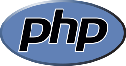
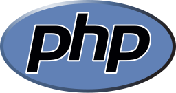

Skills
Le mie competenze derivano da anni di studio autonomo passion-driven e due anni di esperienza lavorativa preso la InfoSystems S.r.l. dove svolgo lavoro di sviluppatore gestionale e customer success, dove ho imparato ad interfacciarmi con il cliente per distinguere e risolvere le problematiche e, sviluppare software desktop che si interfacci con un database.
A novermbre 2018 ho iniziato un nuovo studio presso Openclassrooms seguendo il percorso "FullStack" formandomi finalmente per il web con tecnologie React.js, Ruby e Ruby on Rails.
Per qualsiasi informazione aggiuntiva non esitare a contattarmi.

 
